05-diffusion RL: 对比 LLM RL
TL; DR：LLM 的 GRPO 整套搬过来就能用，只有一处变了：模型每步产出的不再是一个 token，而是去噪一步。剩下的不同全从这儿来——logprob 得换个算法，KV cache 没了，池间传输的主要来源从权重变成轨迹。
前言
这一篇把 GRPO 换到 diffusion（文生图、文生视频）上。算法是 Flow-GRPO，即用在 flow matching 模型（SD3 这一代，§1.1 回顾）上的 GRPO。
读者已经熟 LLM 侧的 GRPO，所以全篇按"那边怎么做、这边怎么变"来排：
| 问题 | 章节 |
|---|---|
| 结构：GRPO 的部件各自对应什么 | §1 结构映射 |
| 算法：一个 step 怎么做 | §2 GRPO 怎么做 |
| 负载：算多少、占多少、搬多少 | §3 负载 |
| 代码：串起来长什么样 | §4 骨架 |
参照是一对同门框架：miles 做 LLM RL，miles_diffusion 做 diffusion RL。后者按前者的设计另起仓库，主要差异来自负载。
全篇的数字取自 miles_diffusion 里训练 SD3 的那个脚本（
scripts/run_diffusion_grpo_sd3_hps_sglang.py）：SD3.5-Medium 出 512×512 的图，去噪 10 步，CFG 4.5，LoRA rank 32，训推前向都是 fp16，2 卡共池；每步 8 prompt × 16 张 = 128 条，分 2 个优化窗口。打分用 HPS，一个按人类偏好训练的图文打分模型。代码对应
miles_diffusioncommit81c7a781、sglangsglang-miles-pin 分支 commit7b6993a3，核对于 2026-11-14。
1. 结构映射
先回顾 diffusion 的结构和训练，再把一次推理装进 GRPO 的 loop，最后拆到单个 action。
1.1 Diffusion回顾
这一节把后文用到的 diffusion 知识从头过一遍。完整推导在 Diffusion 基础篇 和 进阶篇。
[框架：加噪与去噪]
LLM 逐 token 生成，图像不这样做。diffusion 分两个方向：加噪是固定公式，去噪才用模型。
以最早的 DDPM 为例：
- 逐步加噪：\(x_t = \sqrt{\alpha_t}\,x_{t-1} + \sqrt{\beta_t}\,\epsilon_t\)，每步现场采一份噪声，是线性加法。\(\beta_t\) 是第 \(t\) 步的噪声量，等距递增，\(\alpha_t = 1 - \beta_t\)
- 可多步合并：上式可合并成 \(x_t = \sqrt{\bar\alpha_t}\,x_0 + \sqrt{1-\bar\alpha_t}\,\epsilon\)，\(\epsilon \sim \mathcal N(0, I)\)。\(\bar\alpha_t = \alpha_1 \cdots \alpha_t\) 是连乘，先慢后快地降到接近 0
- 去噪要模型：只有 \(x_t\) 时，\(x_0\) 和 \(\epsilon\) 都未知，一个方程解不出，所以训练模型来猜
- 训练：采一份 \(\epsilon\)，一次算出 \(x_t\)。把 \(x_t\) 和 \(t\) 输入模型，预测这份 \(\epsilon\)，loss 是 MSE
- 推理：从纯噪声 \(x_T\) 出发，每步调用一次模型，再用固定公式算出均值、加一份随机噪声，得到 \(x_{t-1}\)；走完上千步得到 \(x_0\)
[网络：去噪时预测什么]
网络只用在去噪方向：看一张带噪图，预测里面的噪声。
- 输入：带噪图 \(x_t\)、步号 \(t\)（即噪声程度）、条件 \(c\)（prompt 的 text embedding）
- 输出：和 \(x_t\) 同 shape，DDPM 下是噪声 \(\epsilon\)，不是下一步的图
- 主干：早期是 U-Net（CNN），SD3 换成 Transformer 类变种 (DiT)，主干怎么换，框架都不变。
训练和推理都调用它，但调用方式不同：
| \(x_t\) 从哪来 | 调用次数 | |
|---|---|---|
| 训练 | 随机取一个 \(t\)，从 \(x_0\) 一次算出 | 每个样本 1 次 |
| 推理 | 上一步算出的结果 | 每步 1 次，走完全部步数 |
[DDIM 与 flow matching]
后来的两种做法都保留“加噪用公式、去噪用模型”。DDIM 只换去噪的采样公式，flow matching 把加噪公式和预测目标也换了。SD3 用的是 flow matching。
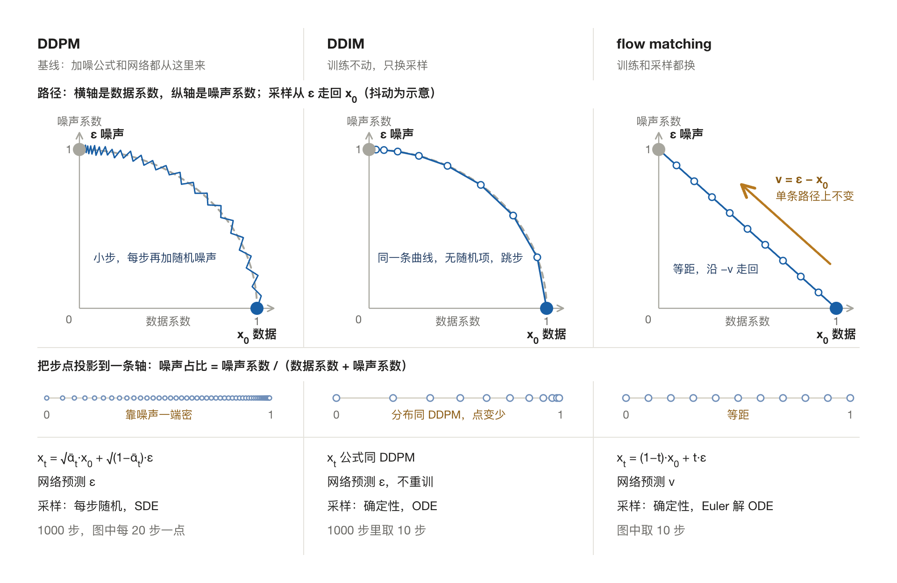
| 框架 | \(x_t\) | 网络预测 | 怎么采样 | 每步随机项 |
|---|---|---|---|---|
| DDPM | \(\sqrt{\bar\alpha_t}\,x_0 + \sqrt{1-\bar\alpha_t}\,\epsilon\) | 噪声 \(\epsilon\) | 逐步去噪，上千步 | 有，即 SDE 采样 |
| DDIM | 同 DDPM | 同 DDPM，不重训 | 跳步，几十步 | 无，即 ODE 采样 |
| flow matching | \((1-t)\,x_0 + t\,\epsilon\) | 速度 \(v\) | Euler 法：\(x \leftarrow x - v\,\Delta t\) | 无，即 ODE 采样 |
flow matching 把加噪看成从 \(x_0\) 匀速走到 \(\epsilon\)：\(x_t = x_0 + t\,v\)。\(t\) 每涨 0.1，走完 10% 的路。
| 量 | 含义 | 训练时 | 推理时 |
|---|---|---|---|
| \(t \in [0, 1]\) | 时钟 | 随机采 | 按步数排好 |
| \(v = \epsilon - x_0\) | 速度：方向和快慢 | 直接算出，当 GT | 网络预测 |
| \(x_t\) | 当前位置 | 用公式算出 | 上一步的结果 |
- 去噪：时钟拨回 \(\Delta t\)，位置走 \(x \leftarrow x - \hat v\,\Delta t\)
- 少步：网络学到各条直线的平均方向，采样轨迹接近直线，大步走偏得少
[模型：SD3 这一代]
除了主干 DiT，SD3 还有：
- VAE：把图压成 latent（512×512 变成
[16, 64, 64]），\(x_t\) 从此指 latent - 加入文字：图文 token 拼成一条序列，一起做 attention（见下图）
- 图像 token：latent 像 ViT 一样切 patch
- 文本 token（即 \(c\)）：prompt 过 2 个 CLIP 和 1 个 T5，只算一次
- 整句向量（pooled）：不进序列，和 \(t\) 合并后调每层的 LayerNorm
- CFG：让图更贴 prompt，推理成本 ×2
- 每步带、不带 prompt 各跑一次，两者的差就是 prompt 的作用，放大 \(w\) 倍：\(\tilde v = v(\varnothing) + w\,\big(v(c) - v(\varnothing)\big)\)
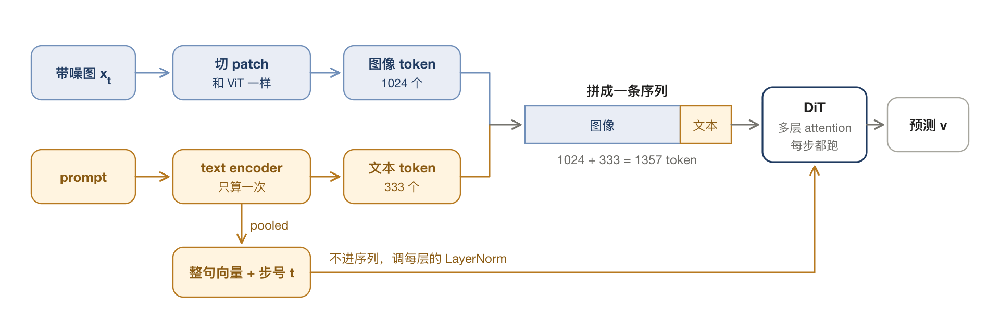
1.2 训练
下面把 diffusion 的 SFT 和 RL 逐一对回 LLM，对 01 篇 §3.0 的对比表。
[SFT：模仿数据]
| LLM | diffusion | |
|---|---|---|
| 输入 | 语料的 token 序列 | 带噪图 \(x_t\)、步号 \(t\)、prompt \(c\) |
| 输出 | 下一个 token 的分布 | 猜的“噪声 − 原图”，记作 \(\hat v\) |
| GT | 下一个 token 的 one-hot | 实际的“噪声 − 原图”，\(\epsilon - x_0\) |
| loss | CE | MSE |
| 一条样本监督几处 | 每个位置 | 抽到的那个 \(t\) |
对于每个sample：
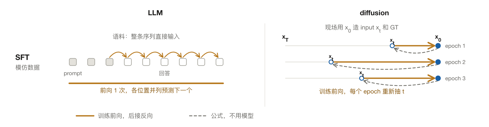
两边的 loss 都是模型输出对 GT 算距离：
- GT 从哪来 (当场制备)：取图 \(x_0\)，现场采 \(\epsilon\) 和 \(t\)，加噪出 \(x_t\)，再算 \(\epsilon - x_0\)
- 模型猜什么：只看到 \(x_t\)，猜 \(\hat v\)，等价于反推原图 \(\hat x_0 = x_t - t\,\hat v\)
- 缺陷同 LLM：手指画多了，没有梯度去压；审美这类目标写不出 GT
[RL：从打分里学]
流程和 LLM 的 GRPO 一样，只是每个阶段的内容换了：
| 阶段 | 模型 | LLM | diffusion |
|---|---|---|---|
| rollout | actor | 逐 token 生成 response | 从纯噪声逐步去噪出图，记下每步 \((x_t, x_{t-1})\) |
| 打分 | RM，冻结 | 给 response 一个分 | 给图一个分 |
| KL | ref，冻结 | 同一前缀，比 token 分布 | 同一 \(x_t\)，比 \(x_{t-1}\) 的高斯分布 |
| update | actor，被训练 | 一次前向算完所有位置 | 每对 \((x_t, x_{t-1})\) 一次前向，拼 batch 并行 |
对于每个sample：
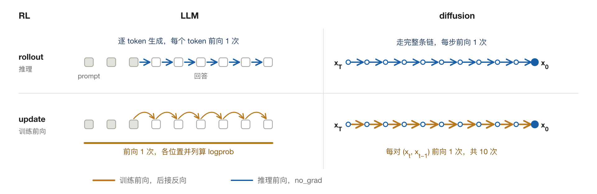
advantage 和 logprob 对着下图看：
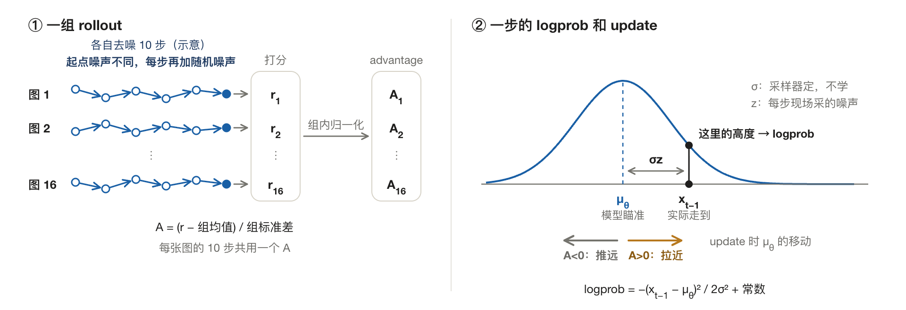
- 图 ①：同一 prompt 出 16 张图，噪声各不相同。组内比分得 \(A\)，一张图的 10 步共用。
- 图 ②：模型瞄准 \(\mu_\theta\)，再随机偏一点（每步新采的噪声）走到 \(x_{t-1}\)。偏得越少，logprob 越大。
loss：公式同 LLM。代入高斯后，两项都是 MSE（略去系数）：
前项像 SFT，GT 换成自己走的一步：\(A>0\) 拉近，\(A<0\) 推远。后项把 \(\mu_\theta\) 拉回 ref。
update：只训 LoRA。每步一次 DiT 前向和反向，一张图 10 次；LLM 一条 response 一次。
2. GRPO 怎么做
先回忆 02 篇 §3.1 的 GRPO 一个 step：
| 阶段 | 做什么 | 本章 |
|---|---|---|
| rollout | 同一 prompt 采 \(G\) 条 | 2.1 |
| reward + advantage | 逐条打分，组内标准化 | 2.2 |
| 训练前向 | actor 和 ref 各前向一次 | 2.3 |
| loss + update | ratio × \(A\)，clip，KL 另算一项 | 2.4、2.5 |
logprob 是唯一真正换了定义的部件，单独放 2.3。每节先一句 LLM 的做法，再看 diffusion 换了什么。
结论：loss 公式一字不改，变的只有 logprob 的定义。clip 的数值、KL 的算法、训推失配的修法，都是它的后果。
2.1 rollout：轨迹与 pair
LLM 的 rollout 产出一条回答，diffusion 产出一条去噪链。每步去噪是一次决策，对回 RL 的说法：
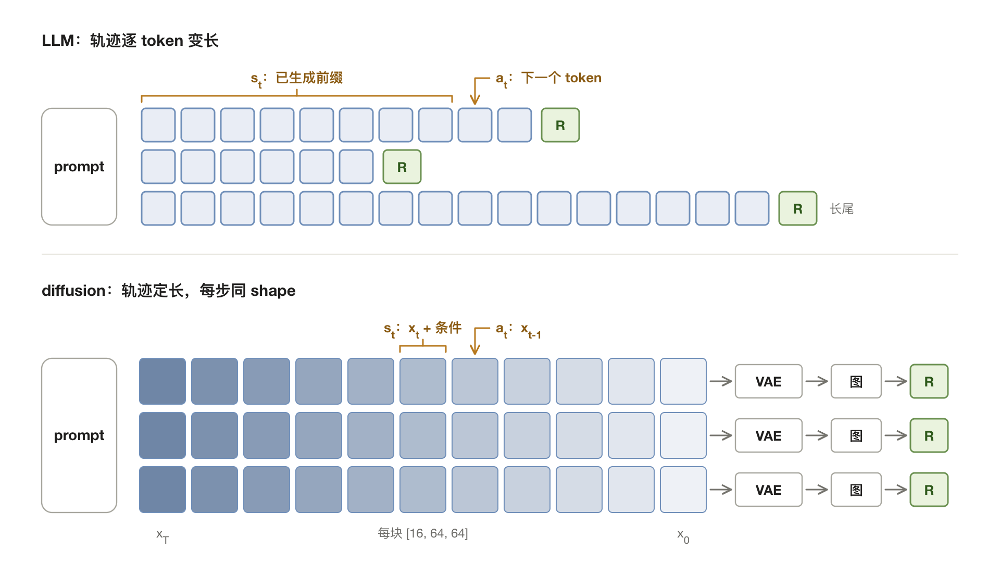
- state：
- diffusion：prompt + 当前这张带噪图 \(x_t\)
- LLM：prompt + 已生成的 token
- action：
- diffusion：下一步的 \(x_{t-1}\)
- LLM：下一个 token
- reward：出图后一个分，只在末端
- 定长：步数由配置定，每条都是 10，没有 03 篇 §3.3 的长尾
rollout 里每一步 \((x_t, x_{t-1})\) 叫一个 pair。训练时它是一个样本，对应 LLM 的一个 token 位置。
rollout 记下每步的 \((x_t, x_{t-1})\)、logprob 和条件，对应 LLM 的 experiences。
2.2 advantage：组内归一
GRPO 的做法：同一 prompt 采一组，组内比分。公式两边一样：
\(\bar R\)、\(\sigma_R\) 是组内分数的均值和标准差，\(\varepsilon\) 防除零。
| LLM | diffusion | |
|---|---|---|
| 一组 | 同一 prompt 的 \(G\) 条回答 | 同一 prompt 的 16 张图 |
| \(R_i\) | RM 给整条回答的分 | HPS 给整张图的分 |
| \(A_i\) 的使用者 | 回答里的每个 token | 图里的每个 pair |
HPS 是按人类偏好训练的图文打分模型，对应 LLM 的 RM。
这一环两边没有差别。真正换掉的是下一节的 logprob。
2.3 logprob
[LLM：回忆]
rollout 采出 "I like cat."，每个位置，模型对实际采到的 token 都有一个概率：
| 位置 | 实际 token | 模型给它的概率 |
|---|---|---|
| 1 | I | 0.40 |
| 2 | like | 0.30 |
| 3 | cat | 0.10 |
| 4 | . | 0.80 |
这四个概率取对数，就是 logprob。rollout 时记下，叫 old_logp。
update 要用这批数据更新好几次。权重一变，同一句话每个位置的概率跟着变：
| 位置 | 实际 token | old 概率 | 更新后的 new 概率 | ratio = new ÷ old |
|---|---|---|---|---|
| 1 | I | 0.40 | 0.40 | 1.0 |
| 2 | like | 0.30 | 0.36 | 1.2 |
| 3 | cat | 0.10 | 0.08 | 0.8 |
| 4 | . | 0.80 | 0.80 | 1.0 |
ratio 再 clip，见 2.4。
一次 update 要用到三份 logprob，来源不同：
| logprob | 哪来 |
|---|---|
| old_logp（分母） | rollout 当场记，或训练前向重算 |
| new_logp（分子） | 训练前向，actor 算 |
| ref 的（KL 用） | 训练前向，ref 算 |
分母这两种取法差别不小，2.5 再说。
[diffusion：logprob 怎么算]
logprob 的定义对回 LLM：
| LLM | diffusion | |
|---|---|---|
| 条件 | 前面的 token | 当前这张图 \(x_t\) |
| 实际采到 | 一个 token | \(x_{t-1}\) |
| logprob | \(\log P(\text{token} \mid \text{前文})\) | \(\log p(x_{t-1} \mid x_t)\) |
一步去噪分两件事：
- 瞄准：DiT 预测 \(\hat v\)，沿它走一步，到瞄准点 \(\mu_\theta = x_t - \hat v\,\Delta t\)（10 步则 \(\Delta t = 0.1\)）
- 偏一点：在 \(\mu_\theta\) 上加一份噪声，落到 \(x_{t-1} = \mu_\theta + \sigma_t \epsilon\)
- \(\epsilon \sim \mathcal{N}(0, I)\) 逐元素随机抽，\(\sigma_t\) 定幅度，每步不同
这个形式是 Flow-GRPO 选的，不是 flow matching 自带的：
- 原本：flow matching 走 ODE，每步确定，没有 logprob
- Flow-GRPO：改走 SDE，每步加一份噪声，才有 logprob
- 不影响出图：出图的分布和 ODE 一样
速查：ODE 与 SDE 采样
ODE = 常微分方程，SDE = 随机微分方程（S 是 Stochastic）。差别只在每步有没有随机项。
ODE SDE 一步 \(x \leftarrow x - \hat v\,\Delta t\) \(x \leftarrow (x - \hat v\,\Delta t) + \sigma_t\epsilon\)（高斯噪声） 同一个 \(x_T\) 每次出同一张图 每次出不同的图 例子 flow matching、DDIM（§1.1 的表） DDPM 有 logprob 没有 有 用 ODE 则 ratio 恒为 1，学不到东西。LLM 没这问题，temperature 再低也有概率。
用一维的数走一遍：瞄准点 \(\mu = 0.50\)，噪声大小 \(\sigma = 0.10\)。落点离瞄准点越远，钟形曲线上的高度越低。
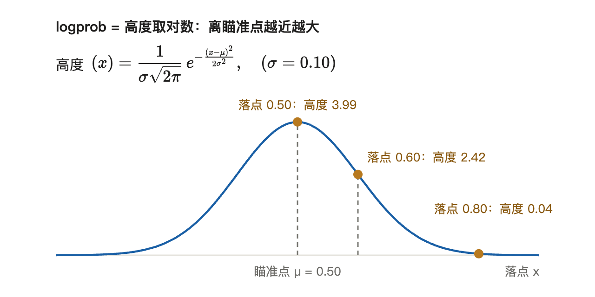
| 实际落点 | 高度 | logprob = 高度取对数 |
|---|---|---|
| 0.50 | 3.99 | 1.38 |
| 0.60 | 2.42 | 0.88 |
| 0.80 | 0.04 | −3.12 |
真实的 \(x_{t-1}\) 有 65536 个元素，每个元素各算一次，再取 mean，量级回到单个元素。公式：
[对回 LLM]
| LLM | diffusion | |
|---|---|---|
| 模型输出 | 词表概率表 | 瞄准点 \(\mu_\theta\) |
| 采出 action | 一个 token | 一个 \(x_{t-1}\)，latent 里 65536 个实数 |
| logprob | 查表取那一格 | 每个元素代高斯公式，再取 mean |
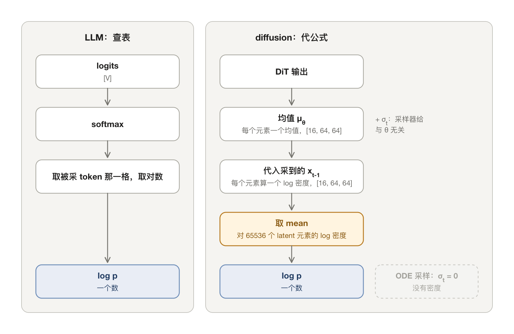
2.4 loss
[公式照搬]
每个 pair 的 loss，和 LLM 每个 token 位置的一模一样：
- \(\rho = \exp(\text{new\_logp} - \text{old\_logp})\)：新旧权重给同一个 action 的概率之比
- \(A\)：2.2 的组内归一化分数
- \(D_{\mathrm{KL}}\)：actor 和 ref 的距离
代入高斯后两项都成了 MSE：按 \(A\) 的正负把 \(\mu_\theta\) 往自己走的那一步拉近或推远，再把它拉回 ref。公式没变，变的是两处数值。
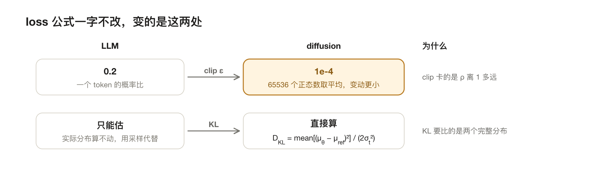
2.5 训推不一致
\(\rho\) 的分母本该是推理引擎采样时的概率（§2.4），实际隔着三段差。这是 04 训推一致性篇 的主题：
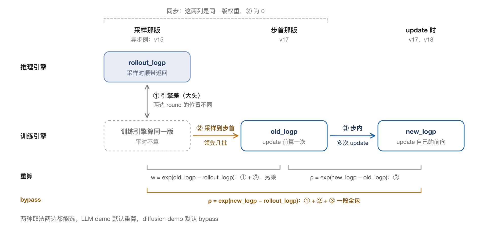
数字出自 04 训推一致性篇的参考任务，那是个 MoE：选中不同 expert 可能把 ① 放大了两个量级。dense 小得多，diffusion 侧没测过。
| 差 | 哪来 | 多大 |
|---|---|---|
| ① 引擎差 | norm 这类算子内部用 fp32 算，两边转回低精度的位置不同 | 最大的一段，KL 0.0136 |
| ② 采样到步首 | rollout 领先几批，同步为 0 | 同 ③ |
| ③ 步内 | 一批多次 update | 隔 1 版约 KL 1e-5 |
分母取 old_logp 还是 rollout_logp 是配置，两边都能选。
差别只有一条：① 的修法不一样。
[LLM：乘法修正] —— 一个权重 \(w\)，乘在 loss 上
logprob 是单个 token 的概率取对数，两个相减取 \(\exp\) 就是密度比：
它乘在 §2.4 那个 loss 的最外面，按 batch 平均：
\(w\) 是常数、不回传梯度，在 clip 外（04 训推一致性篇把它叫 decoupled）。样本采自 \(q\)，每条乘 \(w\) 就当采自 \(p_\theta\)，① 修完。
[diffusion：乘法这条路断了]
logprob 对 65536 个元素取过 mean（§2.3），同一个减法算出来的不是密度比：
- 算出来的是 \(N\) 次方根：\(N\) 个元素独立，连乘才是整步的密度
- 计算本身不难，但没法用：每元素 1e-4 的差乘 65536，\(w\) 落在 \(e^{\pm 6.5}\)，跨 5 个数量级
- loss 是 batch 内按 \(w\) 的加权平均，\(w = 700\) 那条就独占了八成权重 = batch size 掉到 1
- LLM 为什么没事：\(w\) 按 token 算，每个 token 只有一维
- 整条 response 连乘同样会塌
[diffusion：加法修正] 修正在梯度上
没有权重可乘，就不碰样本权重，改动梯度本身：
减掉的那项是什么？先看 \(\nabla_\theta \log p_\theta\) 本身，高斯下有闭式：
就是 §1.2 的拉近 / 推远：从瞄准点 \(\mu_\theta\) 指向这次实际走到的点。
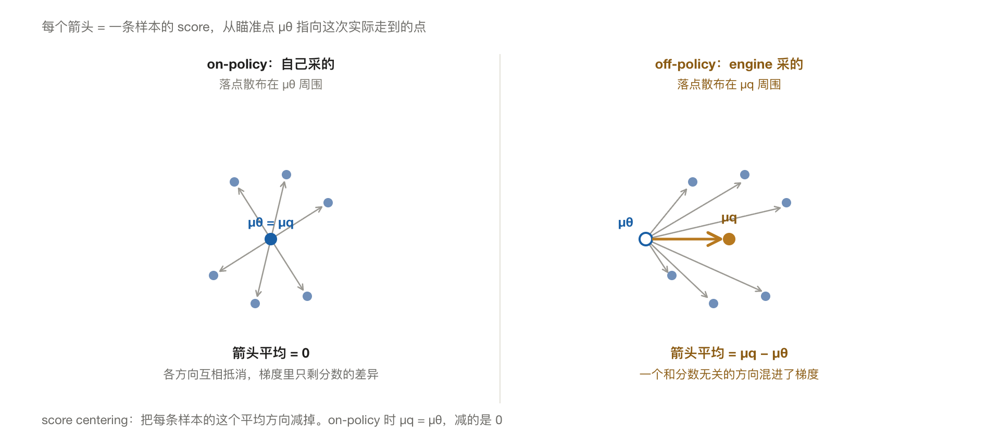
- 减的就是图里那支琥珀箭头：\(\mu_q - \mu_\theta\) 方向，来自引擎差（on policy = 0）
- 怎么算：rollout 每步回传 \(\mu_q\)，\(\mu_\theta\) 训练前向已有 -> 计算梯度时代入公式
- 现成实现：miles 的 LLM 侧是
--loss-type score_centering；diffusion 侧只有 open 的 fork PR #298 - 不过分布没换过去，不等价乘法修正
3. 负载
rollout、打分、update 三个阶段落在卡上，本章算三样：显存、计算量、传输。
放法沿用 03 训推协同篇：共池（同步）轮流占卡，分池（异步）各占一组同时跑。
结论先行：
| LLM RL | diffusion RL | 展开 | |
|---|---|---|---|
| 显存峰值 | 在 update，训练态最重 | 在 rollout，text encoder 常驻 | §3.1 |
| 计算 | 逐 token，有长尾 | 每步整段重算，定长规整 | §3.2 |
| 传输的主要来源 | 权重同步 61 GB | 轨迹，每批约 1 GB | §3.3 |
- LLM 列取自 03 篇的参考任务（Qwen3-30B-A3B，16 卡 B200）
- diffusion 列按前言的 SD3 demo 配置估（DiT 2.5B，连 text encoder、VAE 全套约 8B，2 卡）
显存、计算按模型总量记，与卡数无关。
3.1 显存
权重 = 参数量 × dtype，这条两边一样。差别在两处：随负载涨的那块是什么，训练态有多重。
各阶段用到的量：
| 阶段 | LLM | diffusion |
|---|---|---|
| rollout | 推理权重 61 GB + KV cache 约 100 GB，随并发 × 长度上限涨 | DiT 5 GB + text encoder 11 GB + VAE 0.2 GB + 激活（随分辨率涨），无 KV |
| 打分 | RM，外部服务 | HPS 约 2 GB |
| 训练前向（actor、ref） | actor 的 bf16 副本 61 GB（也可直接用推理结果，但不推荐）+ ref 61 GB | 重算时复用 update 的底座 5 GB，不另占(大部分时候默认用推理结果)；ref 跟着 update 跑 |
| update | actor 训练态 488 GB（bf16 副本 61 + 梯度、优化器状态 427）+ 激活 | 底座 5 GB（冻结，兼任 ref）+ LoRA 几十 MB + 激活 |
数据相关分几种：前后向 - 大 = 激活；推理 - 大 = 表现为KV；无梯度前向 - 小 = 可忽略（逐层算完即丢）
共池（同步）下各阶段轮流占卡，两边峰值阶段正好相反：
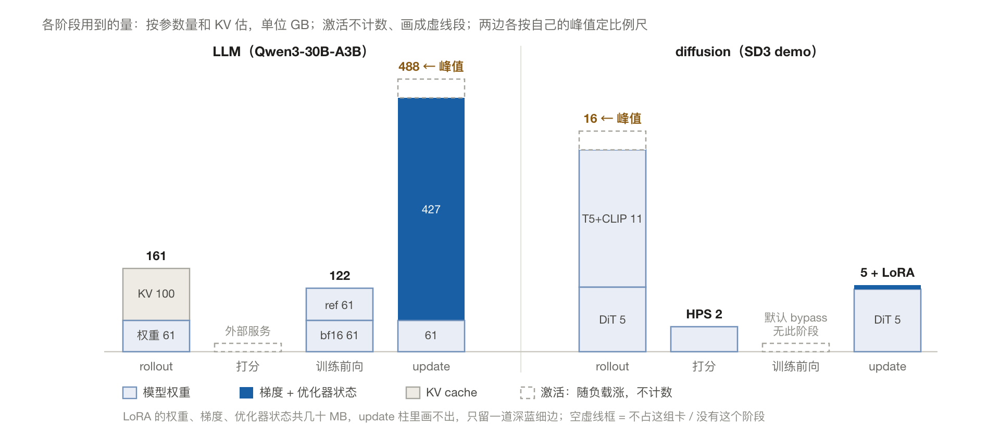
[rollout 侧：会涨的块换了]
- LLM：随 decode KV Cache 累加
- diffusion：没有明显累加 递增的；有算一步丢一步的临时激活，峰值约百 MB（推算）；视频几万 token 才到 GB
- text encoder 11 GB：开头算一次 \(c\)，之后一直常驻
[update 侧：四样存储各跟谁走]
权重和优化器状态常驻；梯度一步之内、激活前向存到反向，用完就丢。
| 存什么 | 正比于 | LLM 全参 | diffusion 只训 LoRA |
|---|---|---|---|
| actor 权重 | 模型本身 | 61 | 底座 5 + 挂上的 LoRA 几十 MB |
| ref 权重 | 模型本身 | 另一份 61 | 就是底座，不另占 |
| 梯度、优化器状态、高精度副本 | 被训参数 | 427 | ∝ LoRA，几十 MB |
| 激活 | 全参主干 × token 数 | 大 | 同左，不随 LoRA 缩 |
- ZeRO-3：61 + 427 摊到 8 卡 → 每卡 61（03 篇）
- ref = 起点权重：LLM 的 actor 改走了，只能另存一份；diffusion 底座没动过，就是起点
[共池时谁闲着]
闲置的是可 offload 让出的。放得下就不让，省搬运：
| 在跑 | 闲着（LLM） | 闲着（diffusion） |
|---|---|---|
| rollout | 训练那套 488 + ref 61 | 训练侧的底座 5 |
| update | 推理权重 61 + KV 约 100 | engine 全套 16：DiT、text encoder、VAE |
速查：HPS
Human Preference Score，给"人喜不喜欢这张图"打分，角色 = LLM 的 RM。
- 结构 = CLIP（ViT-H，2 GB）。输入图 + prompt，各自 encode 成向量，内积就是输出的分，一个标量
- 原版 CLIP 的内积量"图文贴不贴"；在人类偏好数据上微调权重后，量的变成"人喜不喜欢"
- 可换别的：PickScore、VLM 当裁判、OCR 规则分
3.2 计算量
LLM 推理分 prefill 和 decode（见推理基础篇）。decode 每次只算 1 个新 token，前缀靠 KV cache 复用。diffusion 没有 decode：
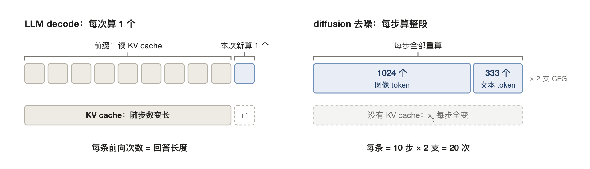
[rollout 侧]
| 每条轨迹 | LLM | diffusion |
|---|---|---|
| 前向次数 | 回答多长就几次 | 10 步 × CFG 2 支 = 20 次 |
| 每次前向的 token | 1 个 | 1357 个全算 |
| 长尾 | 有 | 无 |
| VAE 解码 | 无 | 出图 1 次，在 engine |
速查：CFG 的 2 支
classifier-free guidance（Diffusion下），让图更服从 prompt：每步带、不带 prompt 各跑一次，差值放大 \(w\) 倍：
\[\tilde v = v(\varnothing) + w\,\big(v(c) - v(\varnothing)\big)\]rollout、update、ref 的每次前向都是两支，反向也穿两支的图——训练要复现 \(\tilde v\) 才能算 logprob。下文计数不再重复标。
- 变规整：耗时由步数和分辨率定，配置定了就不变；没有 03 篇 §3.3 的长尾
- 视频按帧放大：token 数和 HPS 打分次数都正比于帧数
[训练侧]
| 每条轨迹 | LLM | diffusion |
|---|---|---|
| 训练前向：old_logp | 1 次 | 无，用 rollout 回传的 |
| 训练前向：ref | 1 次 | 每步 1 次，跟着 update 跑 |
| update 前向 + 反向 | 1 次 | 每步 1 次，共 10 次 |
| 打分 | RM 1 次前向 | HPS 1 次前向 |
- 训练侧比 LLM 重：LLM 一次前向盖住整条的所有位置；diffusion 的每一步都要单独前向，一条就是 10 次
- 拼 batch 只省时间：10 步一起算，次数还是 10
- 分池不改计算：前向次数一样，异步省的是等待（小结）
3.3 传输
要搬的两样：轨迹（推理 → 训练）和权重（训练 → 推理）。03 训推协同篇里权重占绝大部分、轨迹可忽略；这里正好相反：
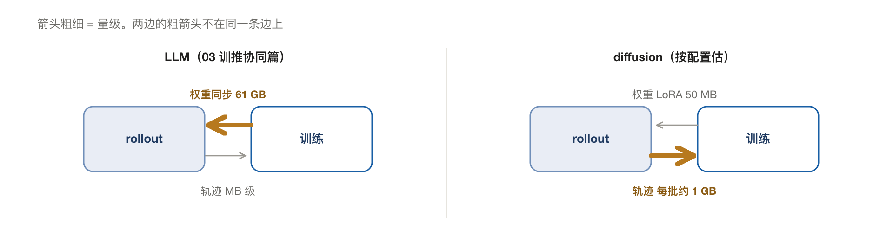
- 轨迹重：每对 \((x_t, x_{t-1})\) 都要回传，一条 8 MB（11 个 latent + 正负条件），128 条约 1 GB
- 权重轻：只传 LoRA 的 A、B；全量 DiT 也才 5 GB
- 视频更重：随帧数涨，一小批就到 GB
- 共池 / 分池只差权重：权重同卡交接 vs 走 NCCL；轨迹都要跨进程搬
4. 代码：一个 step 的骨架
§2 的算法写成代码，三层。可跑版本在 ipynb。
grpo_step 主体：rollout → 打分 → 归一 → update
├── rollout 采样，无梯度，记 old_logp
└── update 循环 每步一次前向，带梯度，算 new_logp
└── cfg / sde_step / log_prob 两边共用
[基础：一步去噪和它的 logprob] ｜ §2.3
def cfg(dit, x, sigma, cond, null_cond, w=4.5):
"""CFG：带、不带 prompt 各跑一次，差值放大 w 倍。每次调用 = 两次前向"""
v_pos, v_neg = dit(x, sigma, cond), dit(x, sigma, null_cond)
return v_neg + w * (v_pos - v_neg)
def sde_step(v, x, sigma, sigma_next, noise_level=0.7):
"""一步去噪：先算瞄准点 μ，再加一份噪声落到 x_prev
返回 x_prev、mu（都是 (B,16,64,64)）、std（标量）
"""
dt = sigma_next - sigma # 负数，时钟往 0 走
std = noise_level * (sigma / (1 - sigma)).sqrt() * (-dt).sqrt()
mu = x + v * dt # 略去 SDE 的漂移修正项
return mu + std * torch.randn_like(mu), mu, std
def log_prob(x_prev, mu, std):
"""高斯对数密度，对非 batch 维取 mean → (B,)"""
ll = -((x_prev - mu) ** 2) / (2 * std ** 2) - torch.log(std)
return ll.mean(dim=(1, 2, 3)) # 65536 个元素取平均，不是求和
这个 mean 决定了后面两件事：clip 取 1e-4（§2.4），乘法修正不成立（§2.5）。
[① rollout：一次采 G 条，每步都记下来] ｜ §2.1
@torch.no_grad()
def rollout(dit, cond, null_cond, sigmas, G=16, n_steps=10):
"""同一 prompt 采 G 条轨迹
返回 traj（长度 n_steps，每项 (x_t, x_prev, old_logp)）和最终 latent (G,16,64,64)
"""
x, traj = torch.randn(G, 16, 64, 64) * sigmas[0], []
for i in range(n_steps):
v = cfg(dit, x, sigmas[i], cond, null_cond) # 整段 1357 个 token 全算
x_prev, mu, std = sde_step(v, x, sigmas[i], sigmas[i + 1])
traj.append((x, x_prev, log_prob(x_prev, mu, std))) # old_logp 当场记下
x = x_prev # 下一步输入全变，没什么可复用
return traj, x
[②③⑤ 一个 step：打分、归一、update] ｜ §2.2、§2.4
def grpo_step(dit, opt, cond, null_cond, sigmas, eps=1e-4, beta=0.01):
traj, x0 = rollout(dit, cond, null_cond, sigmas)
R = hps(vae.decode(x0)) # ② 打分，一条轨迹一个分
A = (R - R.mean()) / (R.std() + 1e-4) # ③ 组内归一，10 步共用
loss = 0
for i, (x_t, x_prev, old_logp) in enumerate(traj): # ⑤ 一步 = 一条训练样本
v = cfg(dit, x_t, sigmas[i], cond, null_cond) # actor，带梯度
_, mu, std = sde_step(v, x_t, sigmas[i], sigmas[i + 1])
with torch.no_grad(), dit.disable_adapter(): # ref = 关掉 LoRA 的自己
v_ref = cfg(dit, x_t, sigmas[i], cond, null_cond)
_, mu_ref, _ = sde_step(v_ref, x_t, sigmas[i], sigmas[i + 1])
ratio = (log_prob(x_prev, mu, std) - old_logp).exp() # 分母来自 rollout，没有重算
surr = torch.min(ratio * A, ratio.clamp(1 - eps, 1 + eps) * A)
kl = ((mu - mu_ref) ** 2).mean(dim=(1, 2, 3)) / (2 * std ** 2) # 闭式
loss = loss + (-(surr - beta * kl)).mean()
loss.backward(); opt.step(); opt.zero_grad()
5. 小结
结构（§1–§2）：GRPO 的 loop 原样搬过来，只换了模型每步产出什么——LLM 是下一个 token，这里是去噪一步。
| 部件 | LLM RL | diffusion RL |
|---|---|---|
| 模型每步产出什么 | 下一个 token | 去噪一步，出一张噪声少一点的图 |
| 一条训练样本 | 一个 token 位置 | 一步去噪的输入和输出两张图 |
| logprob 怎么得到 | 查词表那一格，取对数 | 代高斯公式，65536 个元素取平均 |
| clip 范围 | 0.2 | 1e-4 |
| KL 怎么算 | 拿样本估 | 两个高斯只差均值，有公式直接算 |
| 引擎差怎么修 | 乘一个重要性权重 | 乘法不成立，改成在梯度上减一项 |
| ratio 的分母默认取谁 | 训练侧重算一遍 | 直接用 rollout 记下的 |
| logprob 一定存在吗 | 是，概率总有 | 否，只有 SDE 采样才有 |
一个 step（§2、§3 落到调度上）：对回 03 训推协同篇前言的 step 表，骨架一格没动，格子全换了内容：
| 阶段 | LLM GRPO（03 训推协同篇） | diffusion（按配置估） |
|---|---|---|
| ① rollout | actor 推理态 | actor 推理态，sgl-d |
| ② reward | RM | HPS |
| ③ advantage | CPU，摊到 token | CPU，摊到 pair |
| ④ update 准备 | ref 前向、重算 old_logp |
无 |
| ⑤ update | 训练引擎 | 训练引擎，只加载 DiT |
| 权重同步 | 全量 | 只传 LoRA |
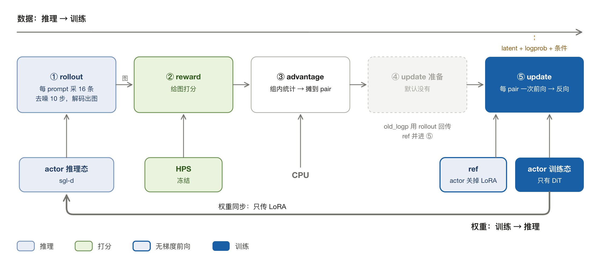
- sgl-d：SGLang 里做 diffusion 推理的栈，项目的简写；LLM 用的那套叫
srt，同仓不同栈 - 表里其余各格前文都有：④ 消失是 §2.5 的 bypass，ref 并进 ⑤、只加载 DiT 见 §3.1
负载（§3）：
| LLM RL | diffusion RL | |
|---|---|---|
| rollout 一次前向算多少 | 1 个新 token | 整段 latent，1357 个 token |
| 每条耗时 | 长短不一，有长尾 | 步数定好，整齐 |
| rollout 时会涨的显存 | KV cache，随并发 × 长度 | 激活，随分辨率 |
| 显存峰值在哪个阶段 | update | rollout |
| 传输的主要来源 | 权重同步 | 轨迹 |